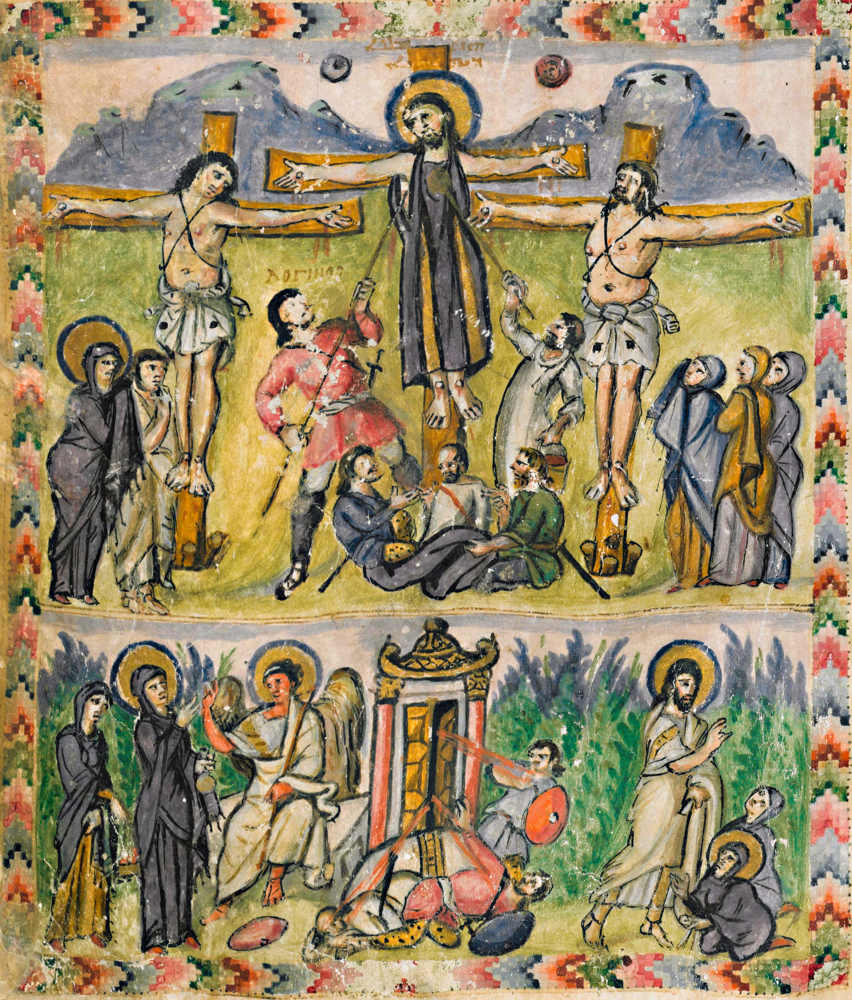
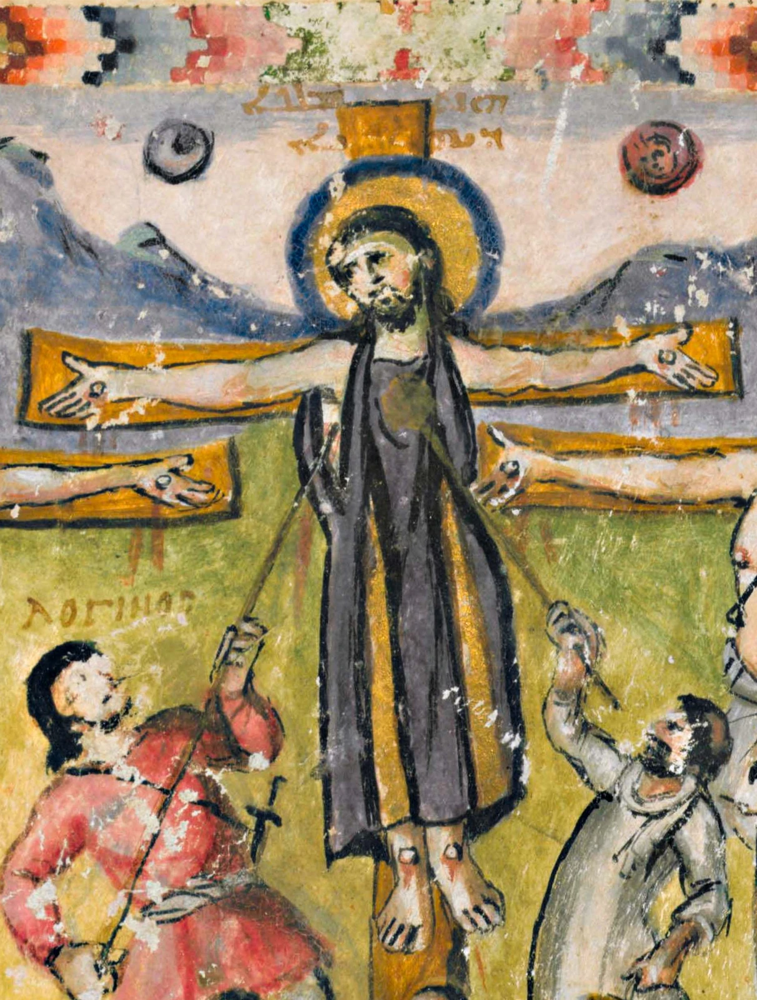

아직 펼치지 않은 카드
아직 펼치지 않은 카드
586년 2월 보름, 시리아의 한 수도원에서 필사자 라불라가 네 복음서(마태·마가·누가·요한복음)를 다 베껴 쓰고 마지막 쪽에 자기 이름을 적었어요. 이 책 앞쪽에는 사본에 남은 가장 오래된 십자가 그림으로 꼽히는 쪽이 있어요. 그 한 쪽에 숨은 작은 것들을 하나씩 눌러 찾아보세요.
아주 옛날 한 사람이 손으로 쓴 성경책에 그림이 가득해. 그림 속 작은 것들을 같이 찾아보자!
검수 전 시안이에요(기준서 1판). 장면에는 기록에 있는 것만 옮겼고, 학자마다 다른 점은 그렇다고 밝혔어요. 상상은 ‘눈 감고 상상해 보기’에만 썼어요.
586년 2월, 시리아의 자그바에 있던 성 요한 수도원이에요. 한 필사자가 네 복음서를 시리아어(예수가 쓰던 아람어의 한 갈래)로 다 베껴 쓰고, 맨 끝 쪽에 몇 줄을 더 적었어요. 이런 글을 ‘끝맺음 글’이라고 해요.
그는 날짜를 ‘그리스력 897년 쉐바트 달(2월쯤) 보름’이라고 적었어요. 지금 달력으로 586년이에요. 이어서 자기 이름을 아주 낮춰서 남겼어요.
“낮고 보잘것없는 라불라, 이 책을 쓴 필사자를 위해 기도해 주세요.”
라불라의 끝맺음 글 가운데서(시리아어 원문의 영어 번역을 이 안내서가 줄여 옮김)
끝맺음 글에는 수도원장 세르기우스와 수사(수도원에 사는 수도자)·부제(예배를 돕는 성직자)들의 이름도 나와요. 글이 적힌 쪽이든 빈 쪽이든 한 장이라도 잘라 가는 사람은 “성소(거룩한 곳)를 턴 도둑들”과 한 무리로 여기라는 엄한 말도 있어요. 그림을 그린 사람의 이름은 적히지 않았어요.
586년 2월 보름, 라불라가 맨 끝 쪽에 몇 줄을 더 쓴다면 무엇을 적었을까요?
책을 다 쓴 날, 필사자가 마지막 쪽에 날짜와 자기 이름을 적었대.
물어보기책을 다 만들었다면, 너는 마지막 쪽에 무엇을 쓰고 싶어?
책 앞쪽에는 아치로 꾸민 숫자 표가 스무 쪽 가까이 이어져요. 4세기 학자 에우세비오스가 다듬은 ‘복음서 대조표’예요. 네 복음서에는 같은 일이 저마다 조금씩 다르게 적혀 있어요. 대조표는 같은 이야기가 네 복음서의 어디에 있는지 번호로 맞대어 보게 해 줘요.
라불라 복음서의 대조표 양옆 여백에는 작은 그림이 세 칸으로 있어요. 위 칸에는 이름을 적은 구약의 인물, 가운데 칸에는 예수의 이야기, 아래 칸에는 동물이나 식물이 있어요. 이 쪽(4v)에는 솔로몬과 다윗, 예수의 세례와 탄생 같은 장면이 들어 있어요.
숫자 표 둘레에 새랑 사람들이 그려져 있어. 같은 이야기를 찾게 도와주는 표래.
물어보기아치 위에 앉은 새 두 마리를 찾을 수 있어?
책장을 넘기면 한 쪽이 위아래 두 칸으로 나뉜 그림이 나와요. 위 칸에는 십자가, 아래 칸에는 빈 무덤과 다시 만난 예수가 있어요.
그림이 든 사본에 남은 십자가 그림 가운데 가장 오래된 것으로 꼽혀요. 그림 속 작은 것들을 하나씩 눌러 보세요.
그림 속 작은 것들을 하나씩 눌러 보세요. ‘가까이 보기’로 크게 볼 수 있어요.

13r쪽. 위 칸에는 십자가, 아래 칸에는 빈 무덤과 다시 만난 예수 · 「라불라 복음서」 13r쪽 · 메디치 라우렌치아나 도서관 Plut. I, 56 · 퍼블릭 도메인 · 위키미디어 공용
그림 위의 숫자나 아래 번호를 눌러 보세요.
한 쪽 안에 금요일의 십자가와, 사흘째 되는 일요일 아침의 빈 무덤이 함께 들어 있어요.
위에는 십자가가 있고, 아래에는 텅 빈 무덤이 있어.
물어보기그림 맨 위에서 둥근 해와 달을 찾을 수 있어?
다음 쪽(13v)에는 예수가 하늘로 오르는 장면이 있어요. 둥근 빛 테두리에 싸인 예수를 위쪽의 두 천사가 붙들고, 양옆의 두 천사는 천으로 감싼 손에 금관(왕관)을 들고 다가와요.
그 아래에는 눈이 가득한 붉은 날개와 바퀴, 사람·사자·독수리·소의 얼굴이 있어요. 구약의 예언자 에스겔이 본 환상(에스겔 1장)을 빌려 그렸어요.
아래 한가운데에는 마리아가 두 손을 들고 서 있어요. 사도행전(예수의 제자들, 곧 사도들이 한 일을 적은 신약 성경의 책)은 흰옷 입은 두 사람이 하늘을 올려다보는 제자들에게 말을 건넸다고 전해요(사도행전 1장 10~11절). 이 그림은 그 두 사람을 날개 달린 천사로 그렸어요.

예수님이 하늘로 올라가고, 사람들이 위를 올려다봐.
물어보기붉은 날개에 그려진 눈을 같이 세어 볼까?
책은 시리아를 떠나 레바논 산골의 수도원들로 갔어요. 1361년에는 카누빈 수도원에 있었고, 그곳에 적어도 두 세기 동안 머물렀어요. 중세에는 마론파(레바논에 뿌리를 둔 교회) 총대주교(그 교회의 가장 높은 지도자)들의 일을 적어 두는 기록장으로도 쓰였어요.
15세기 끝 무렵이나 16세기에 책은 이탈리아 피렌체의 메디치 라우렌치아나 도서관으로 왔어요. 지금도 도서관이 ‘Plut. I, 56’이라는 번호로 간직하고 있어요.

이 책은 여러 나라를 지나서 지금은 이탈리아의 오래된 도서관에 있어.
물어보기1,400년 동안 이 책을 지킨 사람들은 누구였을까?
눈 감고 상상해 보기
돌로 지은 수도원의 작은 방이에요. 창밖으로 보름달이 떠 있어요. 등잔 기름 냄새 속에서 갈대 펜이 양피지를 긁는 소리만 들려요. 마지막 줄을 다 쓴 필사자가 잠시 펜을 내려놓아요. 이 책은 어디까지 가게 될까요?
눈을 감아 봐. 조용한 밤, 창밖에 둥근 달이 떠 있어. 사각사각 펜 소리가 들려. 마지막 줄을 다 쓰면 무슨 말을 적을까?
같은 이야기를 네 사람이 저마다 다르게 전했어요. 내 삶의 한 장면을 다른 사람들은 어떻게 기억할까요?
같은 일을 친구와 나는 어떻게 다르게 기억할까?
마음에 닿는 한 줄을 고르거나 직접 써 보세요. 한 줄을 남기면 이 자리의 도장이 찍혀요. 이 기기에만 저장돼요.
이야기를 보다 궁금해질 만한 것들이에요. 답을 읽거나 짧은 영화로 보세요.

아직 펼치지 않은 이야기예요. 누르면 이야기가 펼쳐지고 색이 돌아와요. 더 알고 싶으면 근거를 따라가 보세요.
다 펼치면, 다음에 오실 때 새 이야기가 찾아와요.
오늘의 뒷이야기는 여기까지예요. 다음에 오시면 새 이야기가 기다리고 있어요.
펼친 뒷이야기 · 누르면 다시 볼 수 있어요
그림은 처음부터 이 책의 것이었을까 1973년 라이트(D. H. Wright)는 그림 쪽도 586년에 이 책과 함께 만들었다고 결론지었어요. 2008년 보르보네와 멘고치는 1460~1461년에 두 사제가 카누빈 수도원에 ‘큰 묶음’을 바쳤다는 메모를 근거로, 그림 묶음이 15세기에야 이 책과 합쳐졌다고 보았어요. 다만 그 읽기는 아직 널리 받아들여지지 않았고, 그림은 6세기 것으로 봐요.
자그바는 어디였을까 수도원은 지금 남아 있지 않아요. GEDSH는 시리아 아파메아 북쪽 약 50km의 제벨 리하 언덕 지대로 짐작하고, 케슬러는 안티오키아와 다마스쿠스 사이 내륙의 잘 알려지지 않은 곳이라고 적어요.
날개 밑의 손 승천 그림의 붉은 날개 밑에 나온 작은 손을, 에스겔 1장 8절의 ‘날개 밑 사람의 손’으로 보는 해설(Art & Theology)도 있고 ‘하느님의 손’으로 보는 해설(밴더빌트 대학 도서관)도 있어요.
덧칠 그림 일부는 뒷날 고친 사람들이 덧칠했어요. 지금 보이는 색과 얼굴이 모두 처음 그대로는 아니에요.
쪽 번호 자료에 따라 앞면·뒷면을 a·b로, 또는 r·v로 적어요. 13r = 13a예요. 끝맺음 글의 쪽도 291쪽(푸를라니), 292쪽(GEDSH)으로 자료마다 달라요.
말씀은 뜻만 옮기고, 본문은 대한성서공회 개역개정으로 이어 드려요.
요한복음 19장 군인들이 옷을 나누고, 한 군인이 창으로 옆구리를 찔러요.
마태복음 28장 1~10절 무덤을 지키던 이들이 떨며 쓰러지고, 여인들이 다시 살아난 예수를 만나 그 발을 붙잡아요.
사도행전 1장 9~11절 예수가 하늘로 올라가고, 흰옷 입은 두 사람이 제자들에게 말해요.
확인한 날 · 2026년 11월 18일 · 바뀌기 쉬운 정보라 정기적으로 다시 확인해요
책은 이탈리아 피렌체의 메디치 라우렌치아나 도서관에 있어요. 실물을 언제 보여 주는지는 도서관에 미리 물어보세요.
1959년에 그림 쪽을 똑같이 찍어 만든 책(영인본)이 나왔어요. 큰 도서관에서 찾아볼 수 있어요.
13r쪽 그림 속 작은 것 여섯 곳을 모두 찾아 읽으면 카드에 금박이 입혀져요.
둘 가운데 하나만 해도 카드가 채색돼요.
‘처음 만나는 기독교 문화’의 깊은 카드예요. 카드 단계와 남긴 글은 이 기기에만 저장돼요.
영화처럼 보기 · 약 3분
화면을 누르거나 → 키를 누르면 넘어가요. 그냥 두어도 자막이 저절로 넘어가요.